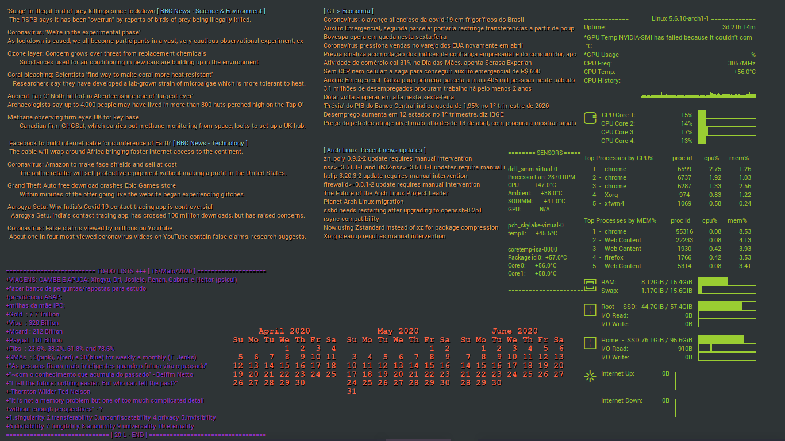

 Fig 1. My conkies running
Conky configs in the new Lua syntax. Some confs are original creations, others are modifications.
There is also a script to restart conky regularly to deal with terrible IO ops memory leak.
I use X11 colour names, mostly, for example Tomato.
Configurações do Conky na nova linguagem Lua. Algumas confs são criações originais, outras eu apenas modifiquei de alguém.
Há também um script para reiniciar os conkies regularmente por causa do terrível vazamento de memória causado por operações de IO.
Uso os nomes de cores do X11, na maioria, por exemplo Tomato.
.
├── [4.0K] fonts/
├── [4.0K] themes/
├── [5.4K] aurora_allinone.conf
├── [2.1K] aurora_ds_sensors.conf
├── [ 457] calendar.conf
├── [2.1K] conkykiller.sh*
├── [287K] git_conky1.png
├── [1.2M] git_conky2.png
├── [ 697] monitor_cooler.conf
├── [3.9K] monitor_cooler_notas_português.txt
├── [2.8K] rss_long1.conf
├── [ 817] rss_short1.conf
├── [ 650] rss_short2.conf
├── [ 514] todo.conf
└── [ 24] todo.txt
2 directories, 13 files
To download all files from a directory, try:
wget -r --no-parent --reject "index.html*" [URL]
{kind=link}
{kind=link}